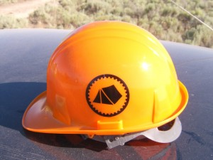
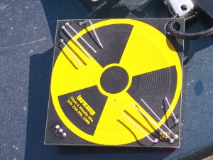

Sugru Covered Joysticks
A shout out and big thanks to my friend DangerJim who gave me some sugru to help coat the joysticks of my RC trainsmitter so they don’t hurt my thumbs. The results look pretty nice:
A shout out and big thanks to my friend DangerJim who gave me some sugru to help coat the joysticks of my RC trainsmitter so they don’t hurt my thumbs. The results look pretty nice:
My girlfriend plays an interesting Wii game called Super Paper Mario where Mario can shift between a 2-dimensional and a 3-dimensional world. Pretty interesting. In chapter 2 section 4 there is a maze of rooms where one must find the last room, room 10. Of course there are walk-throughs all over the internet, but I had her read to me what room she was in, which door she walked through, and what in what room she emerged. Like this:
“Room 9 BR” -> “Room 5 Top”
This means that Room 9’s Bottom Right door drops you into Room 5’s top door. I inputed all the all of the connections, and let one of my favorite programs, graphviz do the rest!
Using the graphviz mediawiki plugin, all I have to do is input the graph text into a page on my wiki, click save, and it will spit out a graphical version (click to see the full size):
It could use some tweaking for the overlaps, but its pretty good as is if you ask me. It certainly gives you an insight into the developers thinking when creating the maze. This would certainly be very difficult to do on paper and have it come out clean.
Here is the link to my actual wiki article. Feel free to edit the graph and click save to see what change happens. (You will have to create an account. Really feel free, I don’t mind, edit away!)
And if you have some suggestions to make the graph look even better, just make them! I watch the recent changes rss feed and I will see it.
This is my first step towards building a UAV, it is a Inertial Measurement Unit.
This is a bot I wrote to play Aftershock games for me. Aftershock produces these 5 games that are all basically the same, but with different themes:
Engines of War - 138071613 Undead Live - 175496321 Mark of Mafia - 833613775 Gunshock Racing - 124286853 Dragon Masters - 304299067
If you play any of these games, feel free to ally with me :) If aftershock bans me, no big deal :)
These are the types of games that make you log in often to check your status, and use your energy (otherwise it is wasted). The thing is, most of the decisions and things I do in these games are just to preocupy your time, I could write a program to do the simple things for me. So I did! Now only if I could run it periodically from a cronjob. You see, they require you to type in a CAPTCHA every time you log into the web interface, so for my program to work I have to manually log in first. But wait, the ipod app doesn’t require a captcha… if only I could run the app from the ipod, steal it’s auth cookie, then run my program it could be compeltely automated! Well the best way I could find to do this was to use the T-Plan vnc robot to do the required key presses, then let ssh and bash do the rest.
I also looked into using the Erica Utilities to start the game without the complexity of vnc, but I found they didn’t work on my platform with the 3.0 firmware. So now I can just sit back and let my robot level me up forever!
Here are some more technical details on the script itself if you are interested. Anyone who plays these games would find these features very desireable:
Recovers from raids
Repairs your buildings
Accepts all incoming ally invitations
Automatically uses all your fighting power to get at least 2exp for every fight, and choosing opponents that you can win against. (It automatically heals you if you need it)
Redeems combo/key/spell codes from a large number of websites to gain a huge amount of free, non-upkeep items. (And it posts your code everywhere when you have a new one)
Sends ally invitations to a huge list of available codes from a large number of code sharing sites to build up your command.
Goes through internal game pages to scrape profiles for ally codes to send more invites to.
Quits automatically when you reach the 50 invite 24 hour limit or if your cookie expires.
Deposits money in the bank
Of course you can change the order or the functions, and they are all optional. All the code is here. The code is just bash, using grep, sed, awk, html2text, cat, etc. You will want to edit the variables to meet your needs before you use it of course. You can check out the code with svn:
Explaination of commands:
aftershock.sh - Main script, takes the argument 1-5 for the particular game you are playing. Needs the -i argument if you need the cookie from the ipod instead of firefox go-ipod.sh - Runs each game consecutivly by vnc’ing to the ipod, running the game, getting the cookie, then running the appropriate aftershock.sh instance spawnall.sh - Runs an exterm for each aftershock game. Useful if you have logged into each game through firefox, and need the robot to just do everything
I will try to support people who genuily who want to run this program. It is GPL. Email kyle@xkyle.com if you need help.


This is mostly for my archival purposes.
I’ve seen a lot of electronic fireflies on the internet. Here, here, and probably others. The theory is simple, just small LED’s charlieplexed with a microcontroller. I wanted to take it a step futher, with a light sensor, solar panel, and more complex firmware.
This is my first microcontroller project from scratch, and I got to learn all sorts of interesting things like SPI programming, Watchdog Timers, Sleep states, and many other things…
I wanted to flash more than just one firefly at a time, so I couldn’t do true PWM with all 12 with an ATtiny85. So I came up with my own way to control varying levels of brightness. Also I wanted a light sensor so the fireflies could come out slowly during the night, and the quickly disappear when the lights come on. The hardware was pretty difficult to solder, involving stripping magnet wire and hand soldering SMD LEDs.


Sorry for the poor pictures, my camera doesn’t do well in low light.
[flashvideo file="video/fireflies.flv” /]
All the code is located here. You can check it out using svn or just download it directly. I was hoping to use a solar panel to make them self-sufficient, but they required too much power for them to be useful unless they were in direct sunlight.
The parts list and schematic and more info are on my wiki.
I’ve finally moved to Colorado, and I had to leave the big clock behind, and luckily I had finished it:

I finilized the code, installed the clock in my church, and programmed it for there needs. The code is stored here if someone want to see it. If you want to check it out run:
git clone https://github.com/solarkennedy/clock.git
I have a little more technical info on my wiki, but it basically goes like this:

So using this and Openvpn, I can control the clock through the serial interface anywhere in the world, even Colorado! And of course the best part of it all, the church staff can also control it by sending an @reply using twitter!
The clock is almost finished, I’m just sanding the rough edges and putting on the final coat of paint. All schematics and code will be on my wiki when I’m finished.

After this second day of talks and no missle silo, there was this strange influx of women as the sunset approached. Turns out they were not for the camp, they were for the band:
They thought it was cool I guess. Somehow the owner of the silo booked these two events to have them intersect. Why else would 3 bands play in the middle of nowhere?
Afterwards there was free beer, and let me tell you, geeks can party hardy all night long:


That is two people with EL wires suits and a pirate’s mast camp. Below is a zip of all the movies and pictures I collected from this day:
When I first arrived at toor camp, I was issued a Hardhat and a kit of electronics to construct my own badge:
[](/uploads/DCAM0007-toorcamp.jpg)
What a cool start! Combined with the already cool scenery:


Only one problem: no silo access. We’ll see if that changes for day two…


{kind=link}
{kind=link}
{kind=link}
{kind=link}
{kind=link}
{kind=link}
{kind=link}
{kind=link}